Answer questions and watch your answers become wiki pages, maps, family trees and timelines — then print it all as a book. Errator runs on your computer, never online.
Free forever.Windows 10/11 · no account · no internet needed
World map
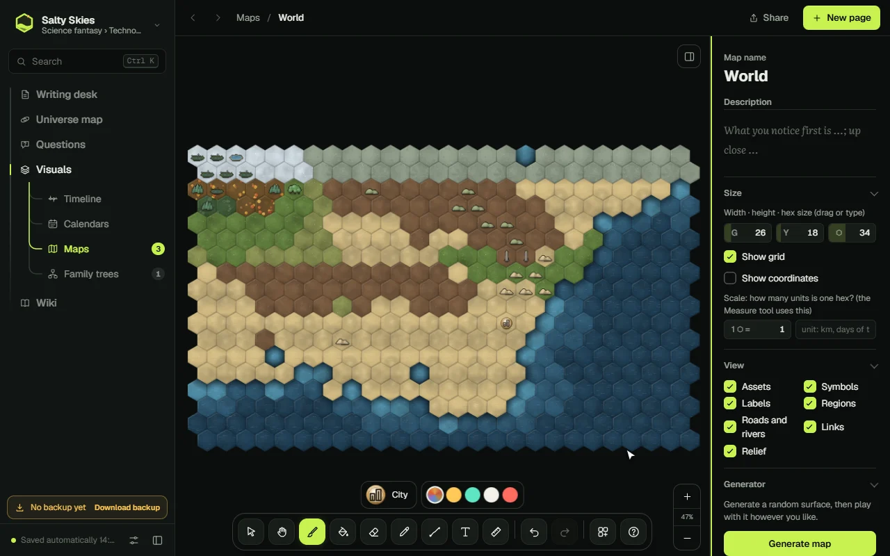
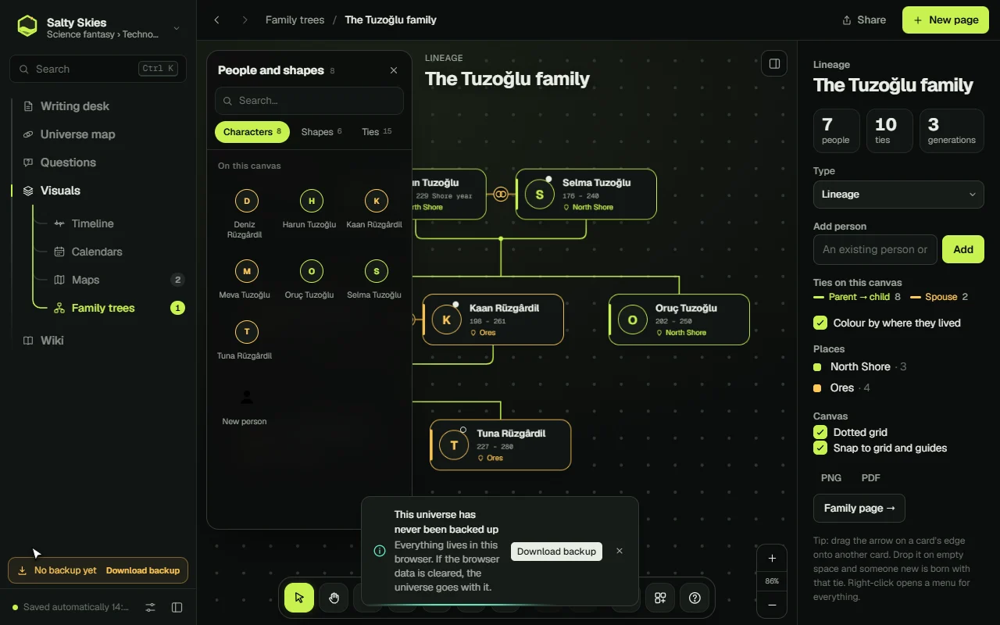
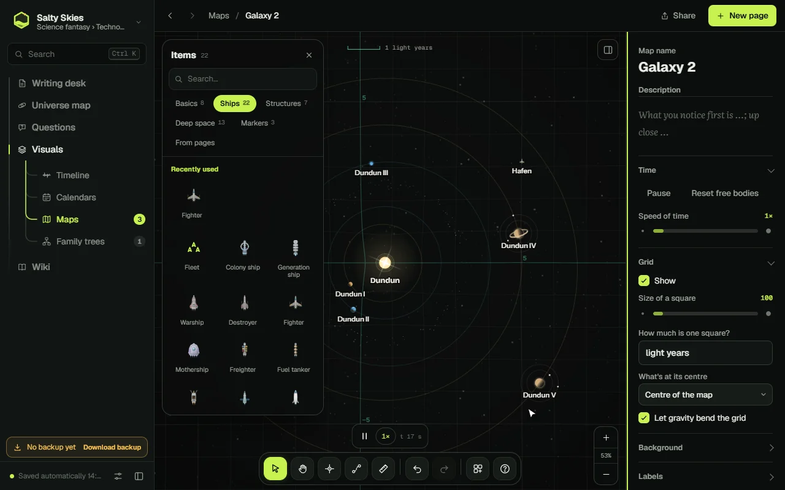
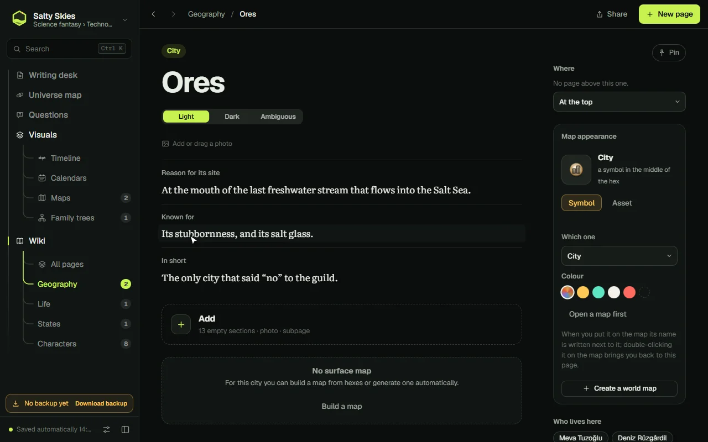
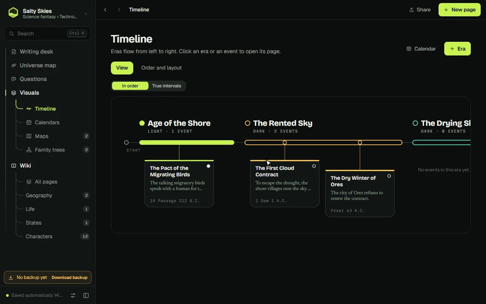
0kinds of pages
0kinds of family ties
0languages, English & Turkish
0servers — your worlds stay yours
What you can build
Everything a world needs, in one quiet room.
Maps that move, a wiki that writes itself from your answers, family trees without rules, and a book at the end.
01
Real-time galaxy maps
Drop a star system and watch it turn. Planets follow real orbits, ships fly their routes, gravity bends the grid — and time is yours to speed up or pause.
Stars, planets, moons, belts, black holes, nebulae
22 kinds of ships, plus stations and jump gates
Every body can link to its own wiki page
Galaxy map
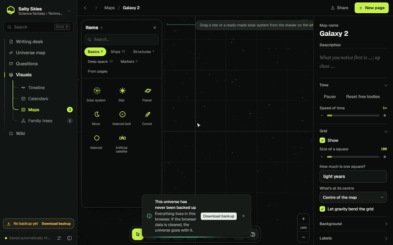
02
A mind map of your universe
Every page you write finds its place on a living map of links. See at a glance what connects to what — and what is still waiting to be written.
Grows by itself as you write
Click any node to open its page
Export it as a single offline file
Universe map
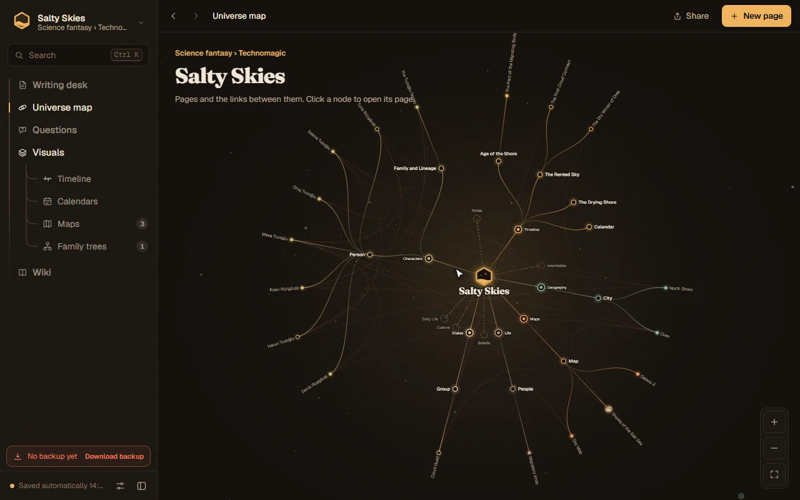
03
Geographic hex maps
Generate a continent in a click, then paint it: forests, mountains, rivers, roads, cities, ruins. Every symbol can open the page it belongs to.
35 terrains, 79 landmarks, 90+ symbols
Brushes, fill, rivers, roads and regions
A whole continent in one click
World map
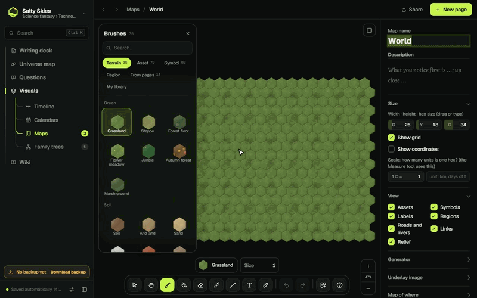
04
A wiki that writes itself
Answer questions and the answers land in the right pages. Type [[ to link anything; pages you mention but haven't written yet are waiting for you.
100+ page types: cities, gods, wars, species…
Links, backlinks and a search that knows your world
Daily sparks: questions drawn from your own world
Wiki page
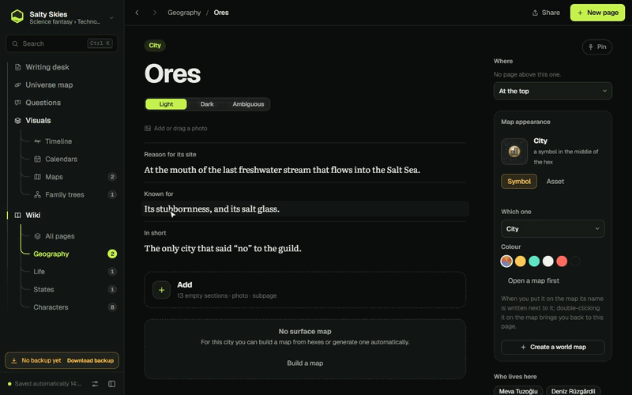
05
Family trees without rules
A freeform canvas, like a whiteboard: drag an arrow from a card and a new tie is born. Secret lovers, forbidden marriages, more than two parents, time loops — nothing is off-limits, and Errator understands every tie it draws.
15 kinds of ties, including ones you name yourself
Spots blood ties, half-siblings, cousins and loops
Notes, frames, guides, snapping, undo
Family canvas
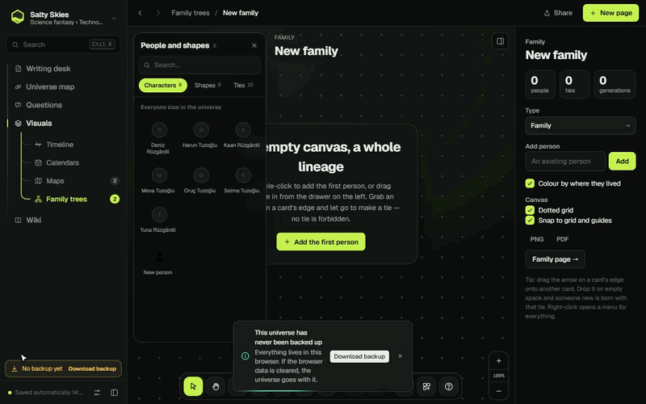
06
Export from anywhere
Turn your world into a printable book that reads like a person wrote it — with a cover, chapters and an index. Or save any map, tree or timeline as PNG and PDF.
A book in natural prose, in two languages
PNG and PDF for maps, trees and timelines
One-file backups and a shareable mind map
Share & export
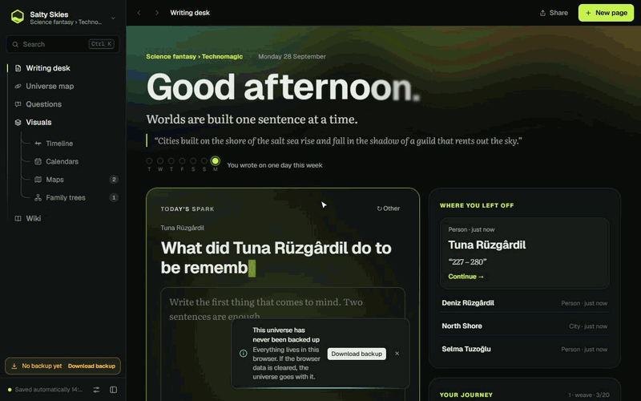
07
Made for the keyboard
Press Ctrl K and jump to any page, map or command. Every studio has its shortcuts, and ? always shows them.
Command palette with full-text search
Back and forward with Alt + arrows
Tool keys in every map and canvas
Shortcuts
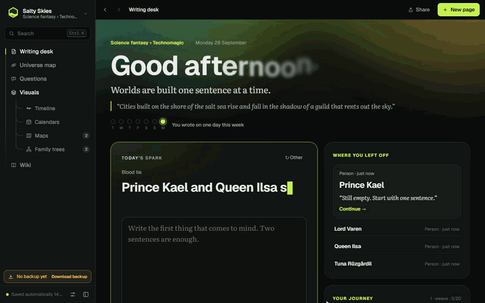
08
Timelines and calendars
Ages flow from left to right; events hang beneath them. Invent your own calendar — months, seasons, weekdays — and date everything in it.
Eras, events and scenes in order or true intervals
Custom calendars with their own months and seasons
Export the timeline as an image or PDF
Timeline
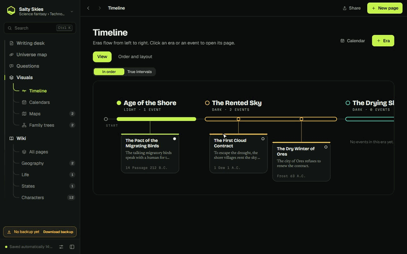
Free, forever
Made by Maximian11. Free for everyone.
Errator was made by Maximian11, who holds all rights to it. It is free for anyone to use — and it will stay that way.
Your words are yours
The texts you write in Errator belong to you. Publish them, sell them, build a book or a game on them — commercially, too.
Visuals are for you only
Maps, family trees, mind maps and other visuals made in the app are for personal use. They may not be sold.
Never for sale
Errator is free, so it can never be sold — not by anyone, not in any form, not bundled into a product, not for any price.
Windows may warn about an unknown publisher the first time; choose “More info → Run anyway”.
Support Errator
Donate if you like
Errator is and will stay free. If it brings you joy and you want to help it grow, you can send USDT to the Tron address below. Every donation buys time for new features.
TH31UCWA8LLE8s45dNx1uPEoEWQcuCdvFc
Send USDT on the Tron network (TRC-20) only. Transfers made on any other network will be lost and cannot be recovered.